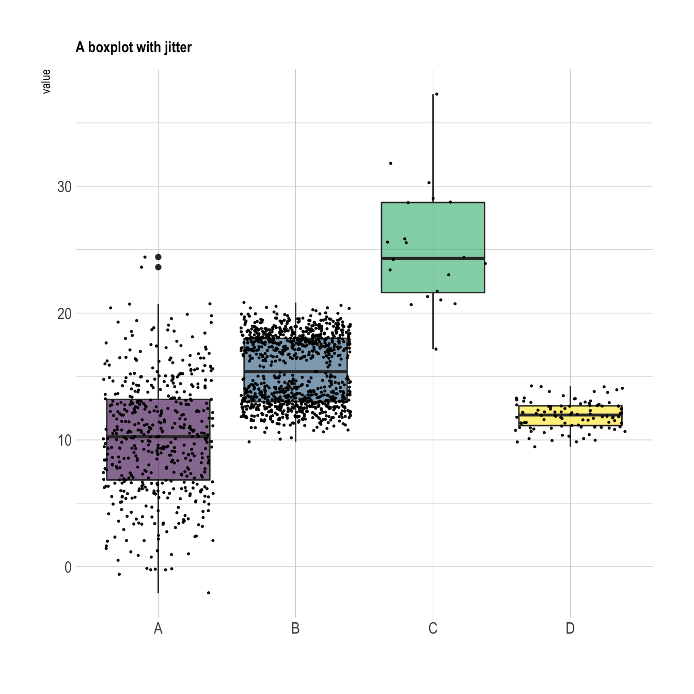
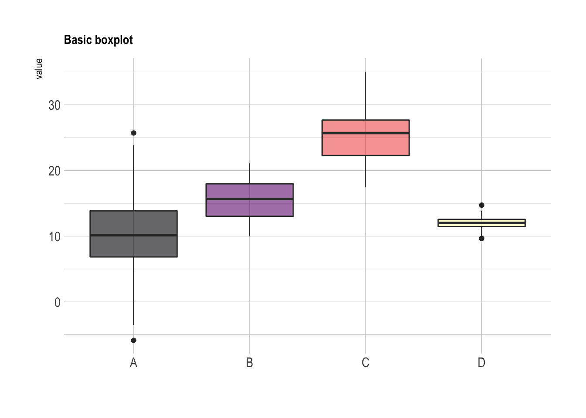
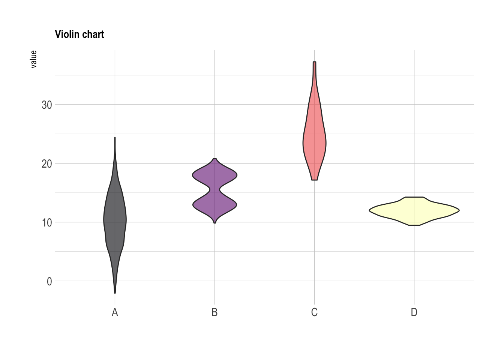

Related chart types

Violin

Density

Histogram

Boxplot

Ridgeline
A boxplot summarizes the distribution of a continuous variable. it is often criticized for hiding the underlying distribution of each group. Thus, showing individual observation using jitter on top of boxes is a good practice. This post explains how to do so using ggplot2.
If you’re not convinced about that danger of using basic boxplot, please read this post that explains it in depth.
Fortunately, ggplot2 makes it a breeze to add invdividual observation on top of boxes thanks to the geom_jitter() function. This function shifts all dots by a random value ranging from 0 to size, avoiding overlaps.
Now, do you see the bimodal distribution hidden behind group B?

# Libraries
library(tidyverse)
library(hrbrthemes)
library(viridis)
# create a dataset
data <- data.frame(
name=c( rep("A",500), rep("B",500), rep("B",500), rep("C",20), rep('D', 100) ),
value=c( rnorm(500, 10, 5), rnorm(500, 13, 1), rnorm(500, 18, 1), rnorm(20, 25, 4), rnorm(100, 12, 1) )
)
# Plot
data %>%
ggplot( aes(x=name, y=value, fill=name)) +
geom_boxplot() +
scale_fill_viridis(discrete = TRUE, alpha=0.6) +
geom_jitter(color="black", size=0.4, alpha=0.9) +
theme_ipsum() +
theme(
legend.position="none",
plot.title = element_text(size=11)
) +
ggtitle("A boxplot with jitter") +
xlab("")
In case you’re not convinced, here is how the basic boxplot and the basic violin plot look like:
# Boxplot basic
data %>%
ggplot( aes(x=name, y=value, fill=name)) +
geom_boxplot() +
scale_fill_viridis(discrete = TRUE, alpha=0.6, option="A") +
theme_ipsum() +
theme(
legend.position="none",
plot.title = element_text(size=11)
) +
ggtitle("Basic boxplot") +
xlab("")
# Violin basic
data %>%
ggplot( aes(x=name, y=value, fill=name)) +
geom_violin() +
scale_fill_viridis(discrete = TRUE, alpha=0.6, option="A") +
theme_ipsum() +
theme(
legend.position="none",
plot.title = element_text(size=11)
) +
ggtitle("Violin chart") +
xlab("")
Related chart types